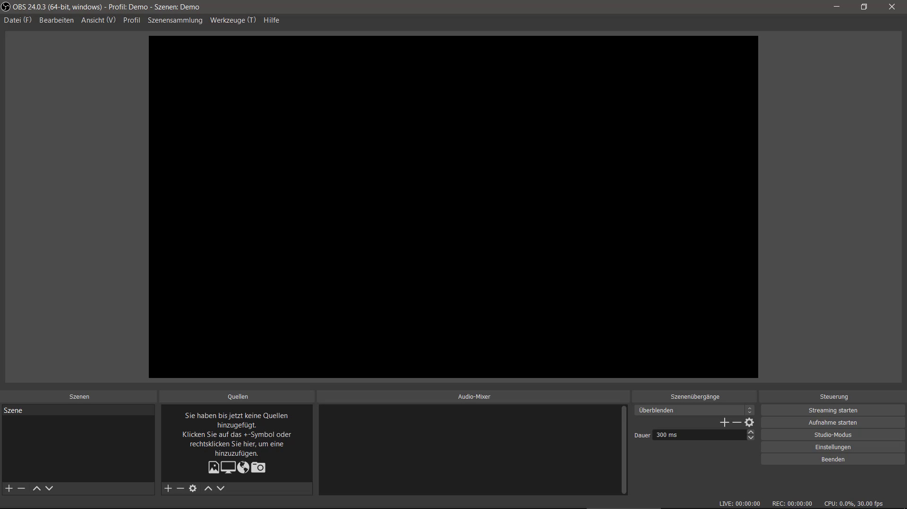

Zurück
Gut dass Sie sich so sehr darüber informieren möchten, und etwas neues lernen möchten

Hier kann man von der erstes Sicht nicht so viel erkennen. Aber diese Programm ist sehr nützlich.
Aller ersten die Programm verbindet sich mit Streaming Platform(Egal ob es Youtube ist oder Twitch). Auch steuerung der Stream geht rüber von Platformen zu OBS
Man kann die Lautstärke des Mikrofons und Audio steuern. Außerdem die Filters können eingefügt werden, so dass die Video von Kamera kann man ändern.
Dazu noch wenn man Besitzer von 2 Monitoren ist, kann man auch die so genannte (Szene) wechseln. Wie zum Beispiel an einer Monitor ist der OBS angeschaltet und die Zuschauer die nicht sehen,
da aber die Hauptszene zu sehen ist, da kann einen Film laufen, Spiel gespielt was auch immer.